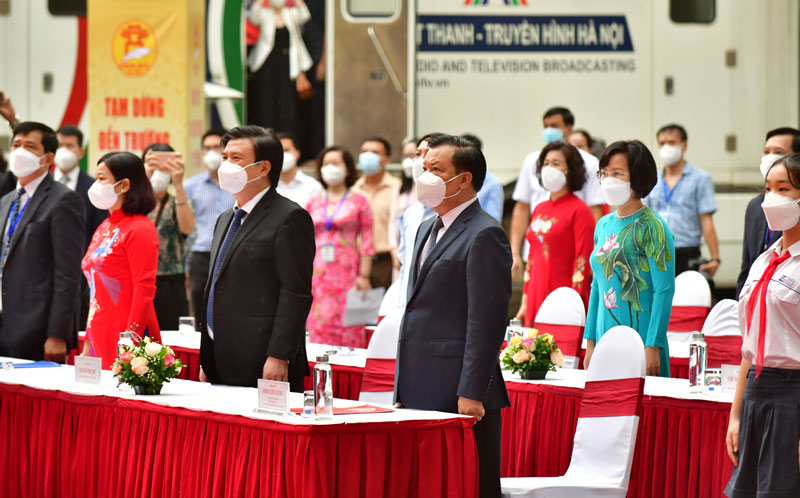
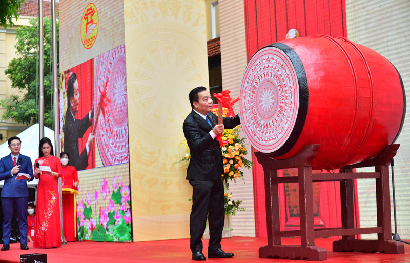

- 1.Kì thi THPT 2025
- 2.Thời Khóa biểu các lớp
- 3.Lịch nghỉ tết
- 4.Lễ Bế Giảng
- 5.Lễ khen thưởng
Các tin tức cần chú ý

Trên 42.000 học sinh Phúc Thọ tham dự Lễ khai giảng trực tuyến chung toàn thành phố Hà Nội
Năm học 2022-2023 là năm học đầu tiên Hà Nội tổ chức một Lễ khai giảng chung cho hơn 2,1 triệu học sinh trên toàn Thành phố. Do tình hình dịch bệnh COVID-19 để đảm bảo an toàn cho cán bộ, giáo viên và học sinh, Lễ khai giảng năm học mới được tổ chức sáng ngày 5/9 tại Trường THCS Trưng Vương (quận Hoàn Kiếm), một trong những ngôi trường trăm tuổi của Thủ đô và được truyền hình trực tiếp trên sóng của Đài Phát thanh và Truyền hình Hà Nội
 Một số hình ảnh lễ Khai Giảng trực tuyến tại Thành Phố Hà Nội
Dự buổi lễ khai giảng có các đồng chí: Ủy viên Bộ Chính trị, Bí thư Thành ủy, Trưởng đoàn đại biểu Quốc hội thành phố Hà Nội Đinh Tiến Dũng Sau nghi thức chào cờ, đại diện cho thầy, trò ngành Giáo dục Thủ đô, Giám đốc Sở Giáo dục và Đào tạo Hà Nội Trần Thế Cương đã đọc thư của Chủ tịch nước gửi ngành Giáo dục và Đào tạo nhân dịp khai giảng năm học mới.
Thay mặt Thành ủy, HĐND, UBND, Ủy ban Mặt trận Tổ quốc Việt Nam thành phố, Bí thư Thành ủy Hà Nội Đinh Tiến Dũng tặng hoa chúc mừng ngành Giáo dục và Đào tạo Thủ đô. Giám đốc Sở Giáo dục và Đào tạo Trần Thế Cương đã thay mặt thầy, trò ngành Giáo dục Thủ đô đón nhận tình cảm và sự động viên của người đứng đầu Đảng bộ thành phố Hà Nội gửi đến cán bộ quản lý giáo dục, giáo viên và học sinh Thủ đô trong ngày khai giảng năm học mới. Đây cũng là nguồn động viên to lớn để thầy, trò toàn ngành tiếp tục nỗ lực vượt mọi khó khăn, hoàn thành nhiệm vụ năm học 2021-2022. Cùng với học sinh cả nước và Thủ đô, hơn 42.000 em học sinh và trên 3.000 cán bộ quản lý, giáo viên, nhân viên ở các bậc học trên địa bàn huyện Phúc Thọ đã tham dự Lễ khai giảng chung của thành phố.

Các đồng chí lãnh đạo, cán bộ phòng Giáo dục và
Đào tạo huyện dự Lễ khai giảng trực tuyến chung toàn thành phố Hà Nội


Một số hình ảnh học sinh và giáo viên các trường trên địa bàn huyện dự Lễ
khai giảng trực tuyến chung toàn thành phố Hà Nội
Năm học 2020 - 2021, ngành giáo dục huyện đã không ngừng nỗ lực, phấn đấu. Theo đó, chất lượng đại trà và chất lượng mũi nhọn của giáo dục Phúc Thọ đã có sự phát triển vượt bậc. Kết thúc năm học, qua kết quả đánh giá bậc học Mầm non, 5 lĩnh vực đối với mẫu giáo đạt 99,2%. Cấp Tiểu học 96,5% học sinh được đánh giá hoàn thành tốt và hoàn thành kiến thức, kỹ năng các môn học, hoạt động giáo dục. Cấp THCS, số học sinh được công nhận tốt nghiệp đạt tỷ lệ 99,06%. Trung tâm GDNN-GDTX tỷ lệ đỗ tốt nghiệp THPT đạt 99,02% và xếp thứ nhất về tỷ lệ đỗ tốt nghiệp ngành GDTX Thành phố.